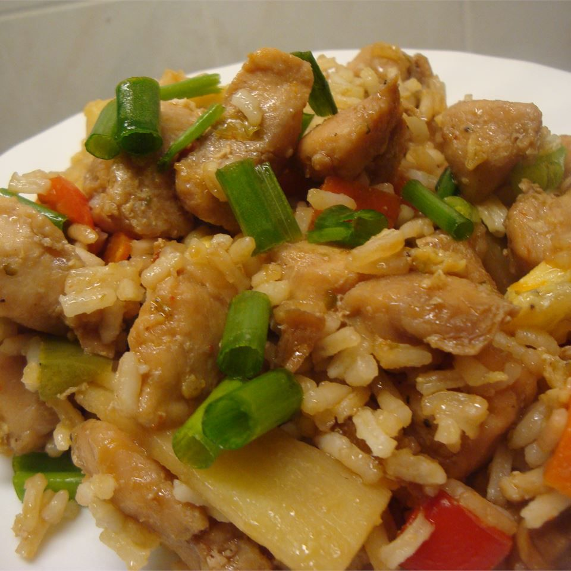

Chinese Chicken Fried Rice by Sara

Photo by AllRecipes Member
Description
This chicken fried rice recipe tastes just like what they serve in restaurants.
A stir-fry with chicken, rice, soy sauce, and veggies like peas, carrots, celery, and bell peppers.
My sister just sort of whipped this up one day, and it's very good!
Ingredients
- 1/2 tablespoon sesame oil
- 1 onion, diced
- 1 1/2 pounds cooked, cubed chicken meat
- 2 tablespoons soy sauce
- 2 large carrots, diced
- 2 stalks celery, diced
- 1 large red bell pepper, diced
- 3/4 cup fresh pea pods, halved
- 1/2 large green bell pepper, diced
- 6 cups cooked white rice
- 2 large eggs, scrambled
- 1/3 cup soy sauce
Steps
- Heat sesame oil in a large skillet over medium heat. Add onion and saute until soft. Add cokked chicken and 2 tablespoons soy sauce; stir-fry for 5 to 6 minutes.
- Stir in carrots, celery, red bell pepper, pea pods, and green bell pepper; stir-fry for 5 minutes. Mix in cooked rice until thoroughly combined.
- Stir in scrambled eggs and 1/3 cup soy sauce; cook until heated through and serve hot.